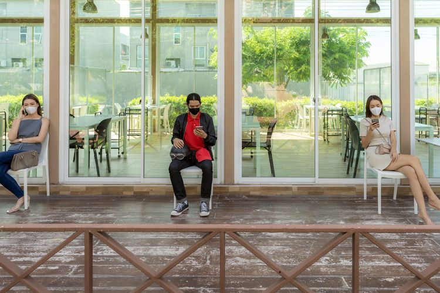

New Normal Versus Old Normal
Kompas.com - 10/11/2020, 10:01 WIB
Editor Heru Margianto

SETELAH berbulan-bulan hidup dalam kecemasan akibat pagebluk Corona, akhirnya saya berhak merasa lega maka gembira menyambut ketibaan apa yang dihebohkan sebagai new normal.
Harapan
Meski tidak dapat dipastikan bahwa saya terbebas dari kemungkinan terpapar virus Corona, saya antusias menyongsong new normal dengan penuh harapan.
Saya juga berupaya mengingkari kenyataan bahwa dalam hal kesehatan mungkin saya bebas Corona namun sebenarnya saya masih dalam kondisi old normal yaitu setiap saat saya yang sudah lansia ini rawan terpapar penyakit lain.
Karena yang beredar di sekitar saya bukan hanya virus Corona namun beranekaragam virus yang sudah punya nama akibat sudah dikenal manusia mau pun yang belum punya nama akibat belum ditemukan oleh para biomolekularawan.
Setiap saat kesehatan saya bisa terganggu penyakit organik di dalam tubuh diri saya sendiri mirip di masa old normal meski disebut new normal.
Nyawa
Mengenai keselamatan nyawa saya juga tetap berada pada kondisi old normal sebab setiap saya bisa jatuh terjerembab lalu kepala terbentur lantai sehingga saya mati di dalam rumah sendiri sebab menurut kata para statistikawan prosentasi terbesar kecelakaan fatal justru berada di dalam rumah sendiri
Bukan mustahil akibat menulis naskah ini saya dilaporkan polisi dengan alasan yang bisa dicari untuk mempolisikan saya.
Bukan mustahil bahwa pada suatu hari saya dirampok lalu agar saya tidak bisa lapor ke polisi maka langsung saya dibunuh oleh perampok.
Bukan mustahil ada teroris kumat angkara murka bom bunuh diri di lokasi yang kebetulan saya berada padahal saya tidak bermusuhan bahkan tidak mengenal sang teroris.
Realita
Juga tidak ada yang bisa menjamin bahwa old normal di mana para koruptor bebas merdeka merajalelakan korupsi tidak akan kembali terjadi di masa yang disebut sebagai new normal.
Juga tidak jelas apakah new normal hanya sekedar nama karena old normal di mana hukum tajam ke bawah sambil tumpul ke atas naga-naganya masih hadir kekal abadi di persada Nusantara tercinta ini.
Sementara kekalahan Trump serta kemenangan Biden yang bisa dianggap membuka pintu gerbang dunia ke new normal juga bukan jaminan bahwa old normal di mana penindasan hak asasi manusia oleh manusia bahkan pembinasaan oleh sesama manusia terhadap sesama manusia sudah lenyap dari planet bumi ini.
Jakarta
Namun yang tidak terbantahkan adalah lalu lintas di dalam kota Jakarta terbukti memang benar-benar bersifat new normal bahkan menggungguli old normal dalam hal makin macet akibat segenap kendaraan bermotor setelah berbulan-bulan terpaksa dan dipaksa tidak turun ke jalan langsung serentak tumplek-ublek membanjiri segenap jalur jalan raya mau pun tidak raya Ibukota yang di masa old normal sebenarnya sudah abnormal banget.
Apalagi musim hujan yang membawa musim banjir makin memperparah kemacetan lalu-lintas Ibukota Republik Indonesia.
Maka Gubernur Jakarta yang sedang mengemban tugas harus siap-siaga untuk kembali memikul beban derita new normal yang mungkin malah lebih berat ketimbang old normal.
Adalah hukumnya wajib bagi Gubernur Jakarta pasrah ikhlas menyerahkan diri untuk dihujat habis-habisan oleh warga alam maya mau pun tidak maya apabila banjir atau apalagi dan kemacetan lalu lintas kembali melanda wilayah bukan kekuasaan namun tanggung-jawab dirinya.
Semoga Yang Maha Kasih melimpahkan anugerah kekuatan lahir-batin kepada Gubernur Jakarta agar mampu sabar serta tabah dalam menghadapi old normal berupa musim banjir hujatan kepada dirinya. Amin,